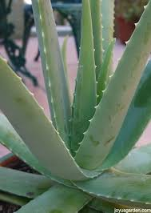

ALOE VERA and its PRODUCTS

Aloe vera is a thick, short-stemmed plant that stores water in its leaves.
It is widely used in the cosmetic, pharmaceutical and food industries, and has an estimated annual market value of $13 billion globally .
Aloe vera is well recognized by its thick, pointed and fleshy green leaves, which can grow to about 12-19 inches (30-50 cm) in length.
Each leaf is full of a slimy tissue that stores water, which makes the leaves thick. This slimy, water-filled tissue is the "gel" we associate with Aloe vera products.
The gel contains most of the bioactive compounds in the plant, including vitamins, minerals, amino acids and antioxidants.
Many people have experienced mouth ulcers, or canker sores, at some point in their lives.
They usually form underneath the lip, inside the mouth, and last for about 7-10 days.
Studies have convincingly shown that Aloe vera treatment can accelerate the healing of mouth ulcers.
Antioxidants are important for health.
Aloe vera gel contains powerful antioxidants, which belong to a large family of substances known as polyphenols.
Aloe vera has often be used to treat constipation.
This time it is not the gel, but the latex, that provides the benefits.
The latex is a sticky yellow residue found just under the skin of the leaf.
The key compound responsible for this effect is called aloin, or barbaloin, which has well-established laxative effects
These polyphenols, along with several other compounds in Aloe vera, can help inhibit the growth of certain bacteria that can cause infections in humans
The products available are aloe vera gel,aloe vera soap and aloe vera facewash.